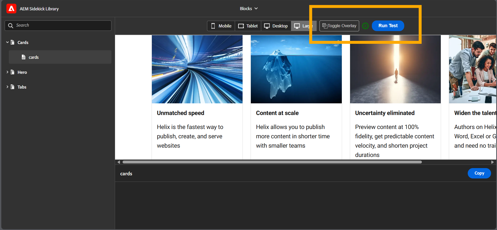
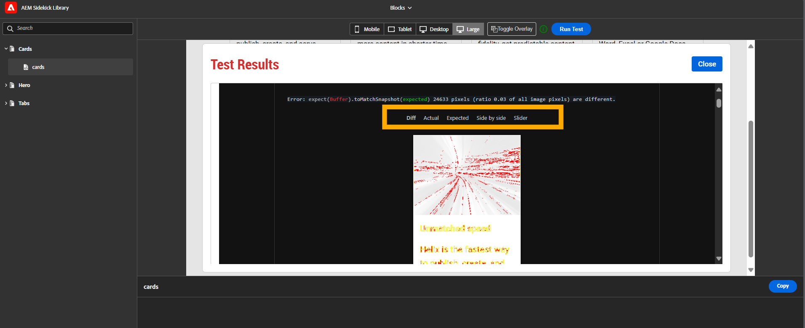
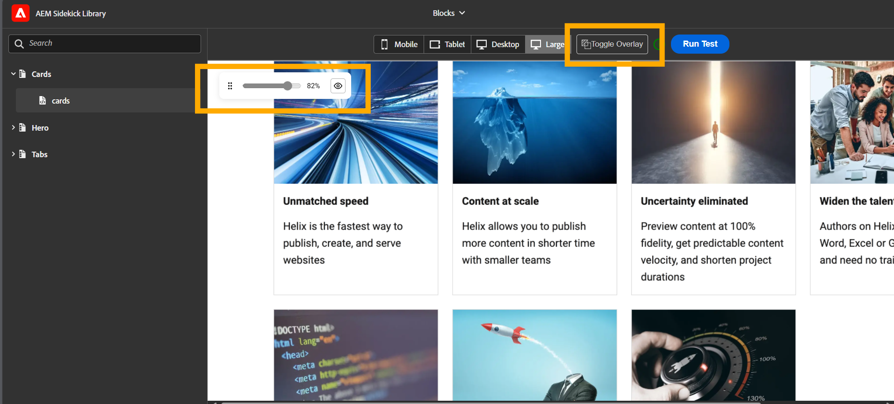

The AEM Visual Checker is a comprehensive automated visual regression testing solution designed specifically for Edge Delivery Services blocks. It provides automated screenshot comparison across multiple viewports to ensure visual consistency and detect unintended visual changes in your AEM blocks and components.
The visual test system addresses critical business needs for maintaining visual consistency and quality across AEM components while enabling rapid development and deployment cycles.
This system transforms manual visual testing into an automated, reliable process that scales with your Block library and development velocity.
Before using the aem-boilerplate, we recommend you to go through the documentation on https://www.aem.live/docs/ and more specifically:
Ensure you have the following files in your project root:
tools/visual-tests directory to your project root.tools/visual-overlay directory to your project root.Add these visual testing scripts to your package.json:
{
"scripts": {
"test:visual": "playwright test",
"test:visual:ui": "playwright test --ui",
"test:visual:update": "playwright test --update-snapshots",
"test:visual:report": "playwright show-report",
"test:visual:generate": "node tools/visual-tests/generate-visual-tests.js",
"test:visual:figma": "node tools/visual-tests/figma-util.js",
"test:visual:blocks": "playwright test tools/visual-tests/blocks",
"test:visual:block": "playwright test",
"test:visual:block:update": "playwright test --update-snapshots",
"test:visual:server": "node tools/visual-tests/start-visual-test-server.js",
"start": "concurrently -k \"npm run test:visual:server\" \"aem up\" --kill-others-on-fail",
"prepare": "husky install"
},
"devDependencies": {
"concurrently": "^9.1.2",
"husky": "^8.0.3"
},
"dependencies": {
"@playwright/test": "^1.53.1",
"cors": "^2.8.5",
"dotenv": "^17.2.3",
"express": "^5.1.0",
"node-fetch": "^2.7.0",
"playwright": "^1.53.1"
}
}Create playwright.config.ts in your project root:
import { defineConfig, devices } from '@playwright/test';
export default defineConfig({
testDir: './tools/visual-tests',
fullyParallel: true,
forbidOnly: !!process.env.CI,
retries: process.env.CI ? 2 : 0,
workers: process.env.CI ? 1 : undefined,
reporter: [['html', { open: 'never' }]],
use: {
baseURL: 'http://localhost:3000',
trace: 'on-first-retry',
screenshot: 'only-on-failure',
video: {
mode: 'retain-on-failure',
},
viewport: { width: 1280, height: 720 },
},
// Custom snapshot path to remove platform name from snapshot files
snapshotPathTemplate: '{testDir}/{testFileDir}/{testFileName}-snapshots/{arg}{ext}',
projects: [
{
name: 'chromium',
use: { ...devices['Desktop Chrome'] },
},
],
webServer: {
command: 'aem up',
url: 'http://localhost:3000',
reuseExistingServer: !process.env.CI,
},
});
Copy test-config/config.js to your project:
export const OVERLAY = {
imageRoot: '/tools/visual-tests/',
};
export const VIEWPORTS = [
{
width: '320px', height: '568px', label: 'Mobile', icon: 'device-phone',
},
{
width: '768px', height: '1024px', label: 'Tablet', icon: 'device-tablet',
},
{
width: '1024px', height: '768px', label: 'Desktop', icon: 'device-desktop',
},
{
width: '1440px', height: '900px', label: 'Large', icon: 'device-desktop', default: true,
},
];
export const viewportSizes = VIEWPORTS.reduce((acc, viewport) => {
acc[viewport.name] = { width: viewport.width, height: viewport.height };
return acc;
}, {});
// Sidekick Library configuration
export const SIDEKICK_CONFIG = {
templatesPath: '/tools/sidekick/library/templates/',
};
Add these entries to your .gitignore:
.hlx/*
coverage/*
logs/*
node_modules/*
helix-importer-ui
.DS_Store
*.bak
.idea
tools/visual-tests/node_modules/*
# Environment variables (optional - for pre-commit hook configuration)
.env
Add visual test initialization to your scripts/scripts.js:
import {
// ... existing code ...
loadScript,
} from './aem.js';
// ... existing code ...
async function loadEager(doc) {
// ... existing code ...
if (document.body.classList.contains('sidekick-library')) {
// initialize visual test
loadScript(`${window.hlx.codeBasePath}/tools/visual-tests/visual-test.js`);
loadScript(`${window.hlx.codeBasePath}/tools/visual-overlay/index.js`, { type: 'module' });
}
// ... rest of existing code ...
}Ensure your Project has Sidekick Library installed and atleast one block configured
test-config/config.json file.tools/sidekick/ ├── library.html # Sidekick Library page ├── config.json # Sidekick configuration
cd tools/visual-tests
npm installnpx playwright installThis installs the required browser binaries (Chromium, Firefox, WebKit) that Playwright needs for visual testing.
npm startMake sure to come back from the visual-test folder to the project root, cd ../../ before running
this command. This starts the visual test server on port 3001 (or the next available port) and the aem up
command on default
3000 port concurrently.
npm run test:visual:generateMake sure you have started the visual test server. This script automatically discovers all blocks in your AEM Sidekick Library and generates Playwright test specifications.
tools/visual-tests/ ├── blocks/ # Block-specific organization │ ├── cards/ │ │ ├── cards.spec.js # Cards test file │ │ ├── config.js # Figma configuration (optional) │ │ └── cards.spec.js-snapshots/ │ │ ├── cards-0-Desktop.png │ │ ├── cards-0-Mobile.png │ │ ├── cards-0-Tablet.png │ │ └── cards-0-Large.png │ ├── hero/ │ │ ├── hero.spec.js │ │ └── hero.spec.js-snapshots/ │ ├── tabs/ │ │ ├── tabs.spec.js │ │ └── tabs.spec.js-snapshots/ │ └── ... (other blocks) ├── figma-util.js # Figma integration utility ├── generate-visual-tests.js # Test generation script ├── visual-test.js # Sidekick Library integration ├── server.js # Visual test server (Express.js) ├── start-visual-test-server.js # Server startup script ├── package.json # Dependencies and scripts ├── package-lock.json # Locked dependency versions ├── port.txt # Server port configuration └── readme.html # This documentation file
The visual testing framework includes powerful Figma integration that allows you to automatically download design mockups from Figma to use as visual test baselines.
Create a .env file in your project root:
FIGMA_ACCESS_TOKEN=your_figma_token_hereImportant: Never commit the .env file to git. It should be in your .gitignore.
For each block, create a config.js file in the block's folder:
// tools/visual-tests/blocks/cards/config.js
export const FIGMA_CONFIG = [
{
name: 'cards-0-Desktop',
figmaUrl: 'https://www.figma.com/design/[fileId]/[fileName]?node-id=1-2',
format: 'png',
scale: 1,
},
{
name: 'cards-0-Mobile',
figmaUrl: 'https://www.figma.com/design/[fileId]/[fileName]?node-id=1-3',
format: 'png',
scale: 2,
},
];npm run test:visual:figmaThis command will:
config.js files| Property | Type | Description |
|---|---|---|
name |
string | Snapshot filename (e.g., 'cards-0-Desktop') |
figmaUrl |
string | Full Figma URL with node-id |
format |
string | Image format: 'png', 'jpg', 'svg', or 'pdf' |
scale |
number | Scale factor: 1, 2, or 4 |
test-config/config.js)Define custom viewports and their properties:
export const VIEWPORTS = [
{
width: '320px', height: '568px', label: 'Mobile', icon: 'device-phone',
},
{
width: '768px', height: '1024px', label: 'Tablet', icon: 'device-tablet',
},
{
width: '1024px', height: '768px', label: 'Desktop', icon: 'device-desktop',
},
{
width: '1440px', height: '900px', label: 'Large', icon: 'device-desktop', default: true,
},
];blocks/[block]/config.js)Each block can have its own config.js file for Figma integration:
// tools/visual-tests/blocks/cards/config.js
export const FIGMA_CONFIG = [
{
name: 'cards-0-Desktop',
figmaUrl: 'https://www.figma.com/design/ABC123/MyFile?node-id=1-2',
format: 'png',
scale: 1,
},
{
name: 'cards-0-Mobile',
figmaUrl: 'https://www.figma.com/design/ABC123/MyFile?node-id=1-3',
format: 'png',
scale: 2,
},
// Add more viewport configurations as needed
];tools/visual-tests/generate-visual-tests.js)Configure test generation parameters:
SELECTOR_TIMEOUT - Timeout for DOM element selection (default: 30000ms)RENDER_TIMEOUT - Timeout for block rendering (default: 3000ms)LAYOUT_TIMEOUT - Timeout for layout stabilization (default: 1000ms)Visual comparison uses strict settings which can be changed based on the needs of the project for accurate detection:
expect(screenshot).toMatchSnapshot(screenshotName, {
maxDiffPixels: 50, // Maximum pixel differences
threshold: 0.05, // 5% color difference tolerance
maxDiffPixelRatio: 0.005, // 0.5% of total pixels tolerance
});Configure the system using environment variables in a .env file:
FIGMA_ACCESS_TOKEN - Figma API access token (required for Figma integration)PORT - Visual test server port (default: 3001)PLAYWRIGHT_BROWSERS_PATH - Browser installation pathNODE_ENV - Environment mode (development/production)CI - Set to 'true' in CI/CD environmentsExample .env file:
FIGMA_ACCESS_TOKEN=figd_xxxxxxxxxxxxxxxxxxxxx
PORT=3001
CI=falseImportant: Add .env to your .gitignore to prevent committing sensitive tokens.
To use the visual testing system with AEM's Universal Editor, you need to configure the Sidekick Library and author the necessary pages and sheets.
Create the required pages in your AEM site:
Create a library spreadsheet in universal editor similar to docs for setting up the sidekick library
Based on your project, update the following files as needed:
paths.yamlpaths.jsonThese files should reflect the actual paths used in your AEM site structure. Refer this link for more info
The visual testing framework supports two main workflows for creating and managing test baselines:
Best for: Teams using Figma for design, automated baseline management, design-to-development workflow
tools/visual-tests/blocks/my-block/config.js with Figma URLsnpm run test:visual:figma to download baselines automaticallynpm run test:visual:generate to create test filesnpm run test:visual:block -- tools/visual-tests/blocks/my-block to testnpm run test:visual:figmaTime saved: ~90% compared to manual screenshot management
Best for: Teams without Figma, custom baseline requirements
npm run test:visual:generatenpm run test:visual:update to create baselinesnpm run test:visualnpm run test:visual:updateVisual tests are automatically configured when you navigate to the Sidekick Library page.
By default the sidekick library is available at:
http://localhost:3000/tools/sidekick/library.html?plugin=blockstools/visual-tests/blocks/[block-name]/[block-name].spec.js-snapshots/
block-name-0-Desktop.png,
block-name-0-Mobile.png, block-name-0-Tablet.png,
block-name-0-Large.png (note the PascalCase viewport names)

After running the test, we should see the test results report generate in the window. Report should have the screenshots and a video of the tests and the differences if any for all the variations in the configured viewports.

Click on the Toggle Overlay button to toggle the overlay on the page. This will show the baseline screenshots and the test results report in the overlay.
The image directory for the toggle overlay can be configured in test-config/config.js:
export const OVERLAY = {
imageRoot: '/tools/visual-tests/blocks',
};The imageRoot property specifies the base path where the overlay will look for baseline screenshots.
The overlay automatically looks in block-specific directories:
/tools/visual-tests/blocks/{component}/{component}.spec.js-snapshots/ and expects images to follow
the naming convention: {component}-{variation}-{viewport}.png (e.g., cards-0-Desktop.png).

The visual test system provides several npm commands for different testing scenarios:
npm run test:visual:figmaDownloads images from Figma based on block configurations. This command:
config.js filesFIGMA_CONFIG arraysnpm run test:visualRuns all visual regression tests using Playwright. This command executes the complete test suite across all blocks and viewports, and generates comparison reports.
npm run test:visual:uiLaunches the Playwright UI mode for interactive testing. This provides a graphical interface where you can:
npm run test:visual:blocksRuns visual tests for all blocks. Each block is tested independently in its own test file.
npm run test:visual:block -- tools/visual-tests/blocks/cardsRuns visual tests for a specific block only. This is useful for:
npm run test:visual:updateUpdates all baseline screenshots with current test results. Use this command when you've made intentional visual changes and want to establish new baselines for future comparisons.
npm run test:visual:block:update -- tools/visual-tests/blocks/cardsUpdates baseline screenshots for a specific block only. Similar to the global update command, but only affects the specified block's baselines.
npm run test:visual:reportOpens the Playwright HTML report in your default browser. The report includes:
npm run test:visual:generateAutomatically discovers all blocks in your AEM Sidekick Library and generates Playwright test specifications. This command:
npm run test:visual:serverStarts the visual test server on port 3001 (or the next available port). This server provides:
npm run test:visual:update or npm run test:visual:block:update
.env file with
FIGMA_ACCESS_TOKEN=your_token. Get your token from Figma → Settings → Account →
Personal Access Tokens.https://www.figma.com/design/[fileId]/[fileName]?node-id=1-2tools/visual-tests/blocks/[block-name]/[block-name].spec.js-snapshots/npm run test:visual:generate and check that
the block appears in the Sidekick Library.GET /api/health - Server health checkGET /playwright-report/* - Test report accessFIGMA_ACCESS_TOKEN - Figma API personal access token (required for Figma integration)PORT - Visual test server port (default: 3001)CI - Set to 'true' in CI/CD environments to enable retries and single worker modePLAYWRIGHT_BROWSERS_PATH - Browser installation pathNODE_ENV - Environment mode (development/production)The project includes a pre-commit hook that automatically runs visual tests before each commit to ensure code quality and prevent visual regressions from being committed.
The pre-commit hook is automatically installed when you run:
npm installThis works because the package.json includes a prepare script that runs husky install.
You can control the pre-commit hook behavior using environment variables:
.env file in your project root and add VISUAL_TEST=false.env file or set VISUAL_TEST=trueTo bypass the pre-commit hook for a specific commit (not recommended for production code):
git commit --no-verify -m "Your commit message"The pre-commit hook is located at .husky/pre-commit and contains the following logic:
VISUAL_TEST=false in .env filenpm run test:visual with retry logicFor detailed information, refer to the documentation in the docs/ folder:
Additional support and reference materials:
| Need | Read This |
|---|---|
| Quick command reference | docs/QUICK_REFERENCE.md |
| Understand architecture | docs/VISUAL_TESTING_DOCUMENTATION.md |
| Setup Figma integration | This file → "Figma Integration" section |
| Troubleshoot issues | This file → "Troubleshooting" section |
| Prepare presentation | docs/PRESENTATION_SUMMARY.md |